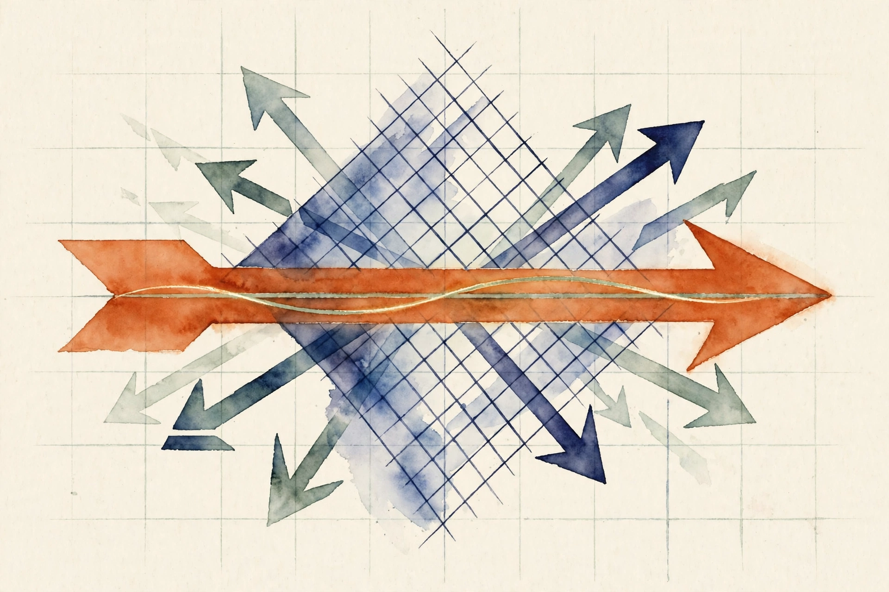

Narrated from the lesson document · no lecture transcript exists
Matrices stretch and rotate space. This companion walks the full arc of Unit 02: subspaces, rank and nullspace, the dot product, projection, transforms, determinants, inverses, eigenvectors, the SVD, PSD matrices, covariance, and conditioning.
From the lesson The idea, and every number beside it, comes from the cited section of the lesson file lessons/u02/lesson-02-linear-geometry-and-decompositions.md. The phrasing is the companion's.
Illustration Invented by the companion: an analogy, a toy with made-up values, or a what-if. Never lesson content.
companion Companion voice: the idea above the tag is from the lesson. The generalization below it is the companion's.
Provenance: the lesson is locally authored prerequisite bridge content. It does not reproduce an instructor lecture, and it carries no transcript. All claim classes are lesson-local.

Section 1 · C01
From the lessonC01
Take the arrows [1, 0] and [0, 1]. Every combination a[1, 0] + b[0, 1] fills the whole plane. Take instead [1, 2] and [2, 4]. Every combination is a[1, 2] + b[2, 4] = (a + 2b)[1, 2]. All arrows land on one line. Two arrows, two different worlds.
From the lessonC01
A subspace is a flat world through the origin: a line, a plane, or the whole space. The rule: if you can add two arrows and stay in the world, and stretch any arrow and stay in the world, the world is a subspace. The computed example: span([1, 0], [0, 1]) = R², dim 2. span([1, 2], [2, 4]) = the line t[1, 2], dim 1, because the second arrow is twice the first. Matrix rank of [[1, 2], [2, 4]] = 1, measured in numpy float64.
From the lessonC01
Why it exists: data with 100 features may live near a 5-direction subspace. Know that, and you store and compute in 5 directions instead of 100. Remove the subspace idea and every dimension-reduction method, PCA in U09, has no language. The failure case: the unit disk is not a subspace. Double the arrow [0.7, 0] and you leave the disk. The addition rule breaks.
Two arrows can span a line or a plane. The count that matters is the number of independent directions, and that count is the rank.
Section 2 · C02
From the lessonC02
M = [[1, 2], [2, 4]]. Push [1, 1] through: M[1, 1] = [3, 6]. Push [2, 1]: [4, 8]. Every output is a multiple of [1, 2]. The whole plane collapses to one line. The arrow [-2, 1] dies: M[-2, 1] = [0, 0].
From the lessonC02
Rank is the count of surviving directions. The nullspace is the set of arrows the matrix kills, the ones that land on zero. The column space is the world of all outputs. Rank plus nullity equals the input dimension. That equation is the whole section. Here rank is 1, the nullspace is span([-2, 1]), nullity is 1, and 1 + 1 = 2.
From the lessonC02
The computed example: M[1, 1] = [3, 6] = 3[1, 2], so the column space is span([1, 2]). The nullspace direction measures [-0.8944, 0.4472] = [-2, 1] divided by sqrt(5). The SVD gives s = [5.0, 1.986e-16]: one real direction, one dust. The failure case: noise raises measured rank. A matrix [[1, 0], [0, 1e-9]] has true rank 2 but behaves like rank 1 in float32. Use the sigma gap, not a threshold.
Section 3 · C03
From the lessonC03
v = [3, 4], w = [1, 0]. The dot product multiplies matching items and adds: 3 times 1 plus 4 times 0 = 3. The norm of v is sqrt(9 + 16) = 5. The agreement ratio is 3 / (5 times 1) = 0.6. As an angle: cos(theta) = 0.6, theta = 53.13 degrees. And v dot v = 25 = 5² checks the norm.
From the lessonC03
The failure case: two arrows of very different lengths can have a huge dot product and still point nearly opposite. [100, 0] dot [-1, 0] = -100: large magnitude, negative agreement. Normalize before comparing agreement across scales.
A dot product of -100 can mean strong disagreement. Length pollutes the signal. The cosine carries it.
Section 4 · C04
From the lessonC04
b = [3, 4], a = [1, 0]. The shadow of b on the line of a is [3, 0]. The leftover, the residual [0, 4], is perpendicular to the line. The shadow plus the leftover equals b exactly. The formula scales a to the right length: proj = (b dot a) / (a dot a) times a. The residual b minus proj is orthogonal to a. That orthogonality is the check, every time.
From the lessonC04
The computed example: (b dot a) = 3, (a dot a) = 1, p = [3, 0], r = [0, 4], r dot a = 0 exactly, measured. Residual length is 4.0. Why it exists: least squares is projection. The best fit is the shadow of the target on the column space of the data matrix. Remove projection and U06 has no mechanism. The failure case: project onto a = [0, 0] and the formula divides by zero. Check a dot a greater than 0 first.
From the lessonC04 Projection bench: enter b. The widget projects onto the lesson's line a = [1, 0] and checks the residual.
b1: b2:
The formula is (b dot a) / (a dot a) times a, with a = [1, 0].
Section 5 · C05
From the lessonC05
R = [[0, -1], [1, 0]] rotates the plane 90 degrees. R[1, 0] = [0, 1]. Apply R to the four corners of the unit square and the square turns upright: (0,0) to (0,0), (1,0) to (0,1), (1,1) to (-1,1), (0,1) to (-1,0). S = [[1, 1], [0, 1]] shears: S[1, 1] = [2, 1], the top of the square slides right.
From the lessonC05
The mental model: a matrix is a recipe applied to every arrow: rotate, stretch, shear, or project. The columns of the matrix show where the unit arrows land. The failure case: a singular matrix flattens the square to a line. M = [[1, 2], [2, 4]] sends every corner onto span([1, 2]). Area becomes zero, and the transform cannot be undone.
From the lessonC05 Transform bench: enter a point, then apply the lesson's rotation R or shear S.
x: y:
R = [[0, -1], [1, 0]]. S = [[1, 1], [0, 1]].
The columns say where the unit arrows land. That is the whole transform, in two arrows.
Section 6 · C06
From the lessonC06
D = [[2, 1], [1, 2]]. The unit square maps to a parallelogram with corners (0,0), (2,1), (3,3), (1,2). Its area is 3. det(D) = 2 times 2 minus 1 times 1 = 3. The number matches the area. A 2 by 2 matrix multiplies every area by its determinant. Sign flips mean the matrix mirrors the plane. Determinant zero means the matrix crushes area to zero: the square becomes a line.
From the lessonC06
The computed example: det(D) = 3.0, measured 2.9999999999999996, float dust. det([[1, 2], [2, 4]]) = 0.0, measured. Area scale 3 versus 0. The cross-check: det(D) times det(inv(D)) = 1.0 within float tolerance. Why it exists: zero determinant is the fast test for singularity. In probability, the determinant of a covariance matrix measures the volume of uncertainty.
From the lessonC06
The trap: det(D) = 1e-12 looks nonzero but the matrix is numerically singular, and the inverse explodes. Worse, D scaled by 1e-6 has a tiny determinant yet is perfectly invertible with kappa unchanged. Determinant measures volume, not invertibility quality.
A determinant of 1e-12 can hide a numerically singular matrix, and a tiny determinant can sit on a perfectly invertible one.
Section 7 · C07
From the lessonC07
D = [[2, 1], [1, 2]] maps [1, 1] to [3, 3]. The inverse D^-1 = [[2/3, -1/3], [-1/3, 2/3]] maps [3, 3] back to [1, 1]. For the singular Z = [[1, 2], [2, 4]], no inverse exists: the matrix crushed the plane to a line, and one line cannot remember two directions. The pseudoinverse Z+ = [[0.04, 0.08], [0.08, 0.16]] gives the shortest arrow x with Zx closest to b.
From the lessonC07
The mental model: the inverse undoes, D^-1 D = I. The pseudoinverse is the best possible undo. For the directions the matrix kept, it inverts exactly. For the directions the matrix killed, it returns zero instead of guessing.
From the lessonC07
The computed example: inv(D) rows [0.6667, -0.3333] and [-0.3333, 0.6667]. inv(D)[3, 3] = [1, 1], residual 0.0, measured. pinv(Z) rows [0.04, 0.08] and [0.08, 0.16]. The defining roundtrip Z pinv(Z) Z minus Z has norm 1.11e-15. The failure case: computing inv(D)b instead of solve(D, b) is slower and less accurate. For kappa = 4000 the inverse path doubles the error. Never form the inverse to solve one system.
| Object | Value | Check |
|---|---|---|
| D^-1 | [[0.6667, -0.3333], [-0.3333, 0.6667]] | D^-1 [3,3] = [1,1], residual 0.0 |
| Z+ | [[0.04, 0.08], [0.08, 0.16]] | roundtrip norm 1.11e-15 |
inv(D)b and solve(D, b) answer the same question. The first is slower, less accurate, and doubles the error at kappa = 4000.
Section 8 · C08
From the lessonC08
E = [[2, 1], [1, 2]]. Push [1, 1] through: E[1, 1] = [3, 3] = 3[1, 1]. The direction survives. Only the length triples. Push [1, -1]: E[1, -1] = [1, -1], length unchanged. Two special directions, stretch factors 3 and 1.
From the lessonC08
An eigenvector keeps its line through the matrix. The eigenvalue is the stretch factor. Symmetric matrices have perpendicular eigenvectors, measured dot 0.0. Not every matrix has real eigenvectors: rotation by 90 degrees turns every arrow, so no real direction survives. The computed example: eigenvalues 3.0 and 1.0, eigenvectors [0.7071, 0.7071] and [0.7071, -0.7071]. Why it exists: PCA in U09 is eigenvectors of the covariance matrix.
From the lessonC08
The failure case: defective matrices. [[0, 1], [0, 0]] has eigenvalue 0 twice but only one eigenvector direction. Eigenvectors do not span the space. The Jordan block breaks diagonalization.
Find the surviving directions and the matrix stops being a mystery: it multiplies each by its eigenvalue, nothing more.
Section 9 · C09
From the lessonC09
M = [[3, 2, 2], [2, 3, -2]], shape (2, 3). Its SVD is M = U Sigma V^T. The singular values are sigma = [5, 3]: two nonzero stretch factors. The columns of V name the input directions, U the output directions. The recipe: rotate into special input axes (V^T), stretch each axis by its singular value (Sigma), then rotate into output axes (U). Three moves, no magic.
From the lessonC09
The computed example: singular values [5.0, 3.0], measured. Keep only sigma = 5: M_1 = 5 u_1 v_1^T. Reconstruction error ||M - M_1||_F = 3.0, exactly sigma_2, measured 2.9999999999999996. The dropped value names the price. Why it exists: SVD is the one decomposition that works on every matrix. It powers PCA, low-rank compression, pseudoinverses, and conditioning analysis.
From the lessonC09
The failure case: truncating to rank 1 when sigma_2 is not small. Dropping 3 from [5, 3] keeps only 25/34 = 73.5 percent of the Frobenius energy. Rank-1 approximation of a full-rank matrix with a flat spectrum is garbage. The selection boundary: never form M^T M to get singular values of an ill-conditioned M. It squares the conditioning too. Use the SVD directly.
Truncate an SVD and the error equals the first value you dropped. Compression comes with an exact receipt.
Section 10 · C10
From the lessonC10
P = [[2, 1], [1, 2]]. For any arrow x, x^T P x is never negative: at x = [1, 1] the value is 6, at x = [1, -1] it is 2. Q = [[1, 2], [2, 1]] fails: at x = [1, -1] the value is -2.0, measured. P is positive semidefinite. Q is not.
From the lessonC10
The test: all eigenvalues greater than or equal to 0. P has eigenvalues 3 and 1, both positive. Q has 3 and -1, one negative. The eigenvalue test is the one to use. The computed example: eig(P) = [1, 3], min 1 greater than 0, PSD. eig(Q) = [-1, 3], min -1 less than 0, not PSD. Cholesky of P succeeds. Cholesky of Q raises LinAlgError, the independent test.
From the lessonC10
Why it exists: covariance matrices are PSD by construction. Kernel Gram matrices must be PSD or the kernel is invalid. Hessians of convex functions are PSD. The float trap: a matrix PSD in exact arithmetic can show a tiny negative eigenvalue like -1e-16 from rounding. Never test min_eig greater than 0 with strict inequality on floats. Use min_eig greater than or equal to -tol.
Section 11 · C11
From the lessonC11
Four points: (1,2), (2,3), (3,5), (4,6). Means: (2.5, 4.0). Center them, average the outer products with divisor n - 1 = 3. Covariance matrix C = [[1.6667, 2.3333], [2.3333, 3.3333]], measured. The off-diagonal 2.3333 is positive: x and y rise together.
From the lessonC11
The computed example: eig(C) = [0.0223, 4.9777], measured. Correlation = 2.3333 / sqrt(1.6667 times 3.3333) = 0.9899: the two features are nearly locked. One eigenvalue is near zero: the data is nearly one-dimensional. The trace invariant: trace = 5.0 = 4.9777 + 0.0223, the sum of eigenvalues.
From the lessonC11
Why it exists: the covariance matrix is the object PCA diagonalizes. Its eigenvectors are the directions of max spread. Its eigenvalues are the spread amounts. The failure case: covariance only sees linear co-movement. Points on a circle x² + y² = 1 have covariance near 0 but are perfectly related. Zero covariance does not mean independence.
Covariance sees only linear co-movement. Points on a circle have covariance near 0 and a perfect relationship.
Section 12 · C12
From the lessonC12
K = [[1, 1], [1, 1.001]]. Solve Kx = [2, 2]: x = [2, 0], measured. Nudge the input to [2, 2.000001], a relative move of 3.54e-07. The answer moves to [1.999, 0.001], a relative move of 7.07e-04, about 2000 times larger. Small nudge in, big shake out.
From the lessonC12
The condition number kappa = sigma_max / sigma_min is the error amplifier. Here sigma = [2.0005, 0.0004999], so kappa = 4002.000750124841, measured. The rule: relative output error is at most kappa times relative input error. The computed example: measured amplification 7.07e-04 / 3.54e-07 = 1999.9, under the kappa bound 4002.0, as promised. The bound holds.
From the lessonC12
Why it exists: every linear solve in ML multiplies input noise by kappa. The failure case: kappa 4002 with float32 (7 digits) leaves about 3 good digits. In float16 the same problem can return pure noise. Identical code, float16 versus float64, different answers. The difference is kappa times the precision gap. Fix the problem by rescaling features before blaming the solver.
A relative input move of 3.54e-07 became a relative answer move of 7.07e-04. The amplifier was kappa = 4002.
Lesson close
From the lessonLesson close
Intuition: matrices stretch and rotate space. The survivors are the column space. The killed are the nullspace. Equation: M = U Sigma V^T names every stretch. Code: svd, solve, and eigvalsh verify each claim. The twelve sections are one story: geometry first, decomposition as the tool, conditioning as the warning label.
Wisdom index